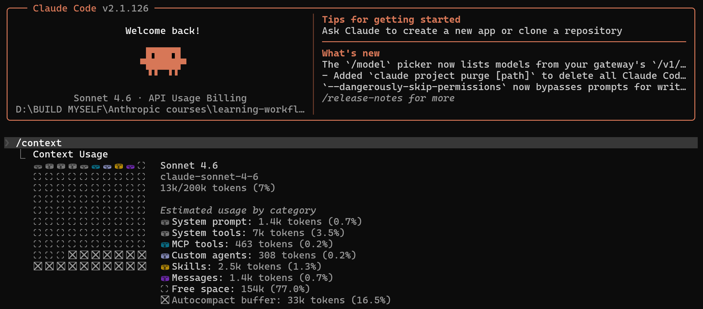

Claude Code 学习笔记 II
为什么 Claude 会"忘事"——问题的根源
你有没有遇到过这种情况：和 Claude 聊了很久，它突然"忘记"了你之前说的事；或者关掉对话窗口，下次打开，它对你一无所知，像第一次见面。这不是 bug，而是 LLM 的本质决定的。
1.1 LLM 的无状态本质
语言模型（LLM）在设计上是无状态的——每一次 API 调用，都是一个全新的实例。模型本身不存储任何东西，它只能看到这次调用时传给它的内容。
打个比方：Claude 就像一位极其聪明的顾问，但每次你打电话给他，他都刚从睡眠中醒来，完全不记得上次的对话。他能做的，是在这次通话里，把你告诉他的所有内容都记在心里，然后给出最好的回答。通话结束，一切清零。
1.2 两个层面的遗忘
Claude 的"忘事"问题有两个完全不同的层面，解决方案也不同：
| 层面 | 什么时候发生 | 具体表现 | 解决方向 |
|---|---|---|---|
| Session 内遗忘 | 同一次对话中，Context Window 快满了 | Claude 开始忽略你早些时候说的内容，重复已解决的问题，或者行为开始漂移 | 管理 Context Window（模块二） |
| 跨 Session 遗忘 | 关闭对话，下次重新打开 | Claude 对你一无所知：不记得你的偏好、不记得项目规则、不记得上次踩过的坑 | 持久化记忆系统（模块三～五） |
/compact 解决的是 session 内的空间问题；Auto Memory 和 Persistent Memory 解决的是跨 session 的遗忘问题。用错工具，问题还是在。
具体场景：这两种遗忘有多痛？
Session 内遗忘的痛：你花了一个小时和 Claude 一起调试一个复杂的认证模块，它已经理解了整个架构。但对话进行到后半段，它突然开始提出你们早就否定过的方案，或者忘记了你说过"这个目录不能动"。你不得不重新解释，效率大打折扣。
跨 Session 遗忘的痛：你花了三次对话教会 Claude 你的项目规范——"用 pnpm 不用 npm"、"测试文件不要随便改"、"这个遗留模块有历史原因，别动它"。第四次打开，它又回到了默认状态，你得重新教一遍。
Session 内的记忆管理——Context Window
模块一说了，Claude 在一次对话里能"记住"你说的话，靠的是 Context Window。这一模块深入讲它是什么、什么东西在消耗它、以及怎么主动管理它。
2.1 Context Window 是什么
Context Window（上下文窗口）是模型在一次对话中能"看到"的全部内容的上限，用 token 来衡量。你可以把它想象成一张固定大小的工作桌面——桌面上能摆的东西是有限的，放满了就得清掉一些才能继续工作。
Claude Sonnet 4.6 的 Context Window 是 200k tokens（约 15 万个汉字，或者 50 万个英文单词）。听起来很大，但在实际工作中，它会比你想象的快得多地被填满。
2.2 什么东西在消耗 Context？
很多人以为只有"对话历史"占空间。实际上，Context Window 被多种内容共同消耗：
| 消耗来源 | 说明 | 能否优化 |
|---|---|---|
| 对话历史 | 你说的每句话、Claude 的每个回复，都完整保留在 context 里 | 可以（/compact 压缩） |
| 读取的文件内容 | Claude 每次读一个文件，文件内容就进入 context；读得越多，占得越多 | 可以（精确指定文件） |
| 命令执行结果 | 运行 bash 命令的输出也会写回 context（write-back 机制） | 有限（输出太长会截断） |
| MCP 工具定义 | 连接的 MCP 服务器，其所有工具定义全量加载到 context | 可以（关闭不用的 MCP） |
| Skills 目录 | 只加载"索引"（名称+描述），不加载完整内容——比 MCP 轻量，但仍占空间 | 可以（关闭不用的 Skills） |
| System prompt | Claude Code 的系统提示词，固定成本，无法避免 | 否（固定成本） |
实测数据：刚启动就用了 7%
下面是一次真实观察：我在一个文件夹目录初始启动了 Claude Code，什么都没做，立刻运行 /context 查看使用情况：

2.3 三个管理命令
Claude Code 提供三个命令来管理 Context Window：
| 命令 | 作用 | 适合场景 | 效果 |
|---|---|---|---|
/context |
查看当前 context 使用情况 | 随时检查，尤其是感觉 Claude "变慢"或"忘事"时 | 可视化展示各类别占用比例 |
/compact |
压缩历史，释放空间，保留核心信息 | 想继续当前任务，但 context 快满了 | 把冗长的对话历史压缩成摘要，腾出空间 |
/clear |
完全清空，不保留任何记忆 | 当前任务已完成，想开始全新任务 | 重置所有 context，fresh start |
/compact vs /clear 怎么选？
Claude 会把之前的对话历史压缩成摘要，保留关键决策和上下文，然后继续。就像把桌上的草稿纸叠整齐放到一边，桌面腾出来继续工作。
完全清空，不带任何包袱。但注意：/clear 之后，之前的所有上下文都消失了。如果有重要信息需要保留，要先写进 CLAUDE.md 或 Memory。
/compact 让你掌握主动权。
2.4 主动节省 Context 的技巧
-
精确的 Prompt
- ❌ 糟糕："帮我看看代码"——Claude 会盲目探索，读很多不必要的文件
- ✅ 好的："检查 auth.js 第 45–60 行的逻辑错误"——精确定位，只读必要内容
-
关闭不用的 MCP 服务器——MCP 工具定义全量加载，不用的服务器直接关掉，用
/mcp管理 - 善用 Subagent——Subagent 有自己独立的 context window，只把结果返回给主 context，适合"探索型"任务（比如"这个 codebase 里哪里用到了认证"），不会污染主对话
跨 Session 的记忆——Auto Memory
模块二解决的是 session 内的空间问题。但关掉对话窗口，一切清零——这是另一个层面的遗忘。Auto Memory 是 Claude Code 给出的第一个答案。
3.1 Auto Memory 是什么
Auto Memory 是 Claude 在工作过程中自动记录的跨 session 笔记。你不需要手动操作——当 Claude 判断"这件事值得记住"时，它会主动把信息写入 Memory 文件，下次对话启动时自动读取。
类比：就像一个助手在每次工作结束后，自己整理一份工作日志，记下"这个客户喜欢简洁的报告"、"那个项目的数据库密码规则很特殊"。下次见面时，他先翻一遍日志，再开始工作。
| 维度 | 说明 |
|---|---|
| 谁来写 | Claude 自动写，判断"这件事值得跨 session 记住"时主动写入 |
| 写给谁用 | 主 Agent（你和 Claude 的主对话），不是 Subagent |
| 什么时候写 | 对话过程中，Claude 随时判断并写入；不是对话结束后统一整理 |
| 什么时候读 | 每次新 session 启动时，自动注入到 system prompt |
3.2 存在哪里，为什么不能团队共享
Auto Memory 存储在本机用户目录下：
~/.claude/projects/<project-path>/memory/ ├── MEMORY.md ← 索引文件（启动时自动注入） ├── user-prefs.md ← 用户偏好 ├── project-notes.md ← 项目经验 └── ... ← 其他 topic 文件
路径在用户目录（~/.claude/）下，不在项目仓库内。这意味着：
- 这是你的私人笔记，不会被 git 提交
- 换一台电脑，Memory 不会跟过去
- 团队其他成员看不到你的 Auto Memory
CLAUDE.md 是你手动写的静态规则——技术栈、编码规范、禁止操作。这些是你明确知道、想让 Claude 永远遵守的事情。
Auto Memory 是 Claude 边工作边自己积累的动态经验——它在工作中发现了什么、你纠正了它什么、项目里有哪些不明显的约定。这些是你可能自己都没意识到值得记录的事情。
两者互补：CLAUDE.md 是你给 Claude 的"入职手册"，Auto Memory 是 Claude 自己记的"工作日志"。
跨 Session 的记忆——Persistent Memory（Subagent 专属）
Auto Memory 是主 Agent 自己积累的私人笔记。Persistent Memory 是另一套机制——专门为 Subagent 设计，可以团队共享，且记录什么、怎么记，都有明确的结构规范。
4.1 Persistent Memory 是什么
Persistent Memory 是通过 Subagent 配置文件（frontmatter）中的 memory 字段开启的持久化目录。当你给一个 Subagent 加上 memory: project，它就拥有了一个专属的跨 session 记忆空间，可以在每次工作后写入、下次工作前读取。
--- Subagent 配置示例 --- name: code-reviewer description: 审查代码质量，检查 bug、安全问题和最佳实践 tools: Read, Glob, Grep model: haiku memory: project ← 开启 Persistent Memory，project scope --- 你是一个代码审查专家。审查时： 1. 先查阅 memory，了解项目历史问题和已知风险 2. 针对本次 diff 进行审查 3. 审查完成后，更新 memory，记录新发现
4.2 四种记忆类型
Persistent Memory 把值得记录的信息分成四类，每一类有明确的适用场景：
| 类型 | 记什么 | 例子 |
|---|---|---|
| user | 用户的稳定偏好 | "我喜欢用 pnpm"、"回答要简洁"、"不要大规模重构" |
| feedback | 用户反复纠正的行为，需要强制执行 | "不要改测试快照，除非我明确要求"、"修改生成文件前先问我" |
| project | 代码库里看不出来的项目事实 | "这个遗留目录不能删，部署依赖它"、"这个服务是因为合规要求存在的，不是技术选择" |
| reference | 外部资源的指针 | incident board 的 URL、监控 dashboard 地址、规范文档位置 |
什么不该存进 Memory？
| 不该存的内容 | 原因 |
|---|---|
| 代码结构、函数签名、文件布局 | 代码是真相的来源，Memory 里的副本只会过时 |
| 当前任务状态（"正在修 auth bug"） | 属于 task/plan，任务完成后这条记忆就没有意义了 |
| 临时信息（当前分支名、PR 号） | 很快就会过时，存了反而产生误导 |
| 密钥、密码、凭证 | 安全风险，绝对禁止 |
4.3 三种 Scope——哪种可以团队共享？
Persistent Memory 有三种存储范围（Scope），决定了记忆存在哪里、能不能被团队共享：
| Scope | 存储路径 | 可 git 共享 | 适用场景 |
|---|---|---|---|
| user | ~/.claude/agent-memory/<name>/ |
❌ 不可以 | 跨项目的个人通用知识 |
| project | .claude/agent-memory/<name>/ |
✅ 可以 | 推荐默认——团队共享，随代码一起提交 |
| local | .claude/agent-memory-local/<name>/ |
❌ 不可以 | 不想提交的私有知识（加入 .gitignore） |
谁来写：Auto Memory 是主 Agent 自己判断写；Persistent Memory 是 Subagent 按 system prompt 指令写。
写给谁用：Auto Memory 给主 Agent（你的主对话）用；Persistent Memory 给特定 Subagent 用，是它的专属工作记忆。
能否共享：Auto Memory 存在用户目录，永远私人；Persistent Memory 的 project scope 存在项目目录，可以 git 提交团队共享。
记忆的存储结构——MEMORY.md 两层架构
不管是 Auto Memory 还是 Persistent Memory，底层的存储结构是一样的：MEMORY.md 索引 + topic 详细文件。理解这个结构，才能理解 Claude 是怎么读 Memory 的，以及为什么有 200 行限制。
5.1 文件结构：索引 + 详细文件
memory/ ├── MEMORY.md ← 索引文件（≤200行，启动时自动注入 system prompt） ├── auth-patterns.md ← topic 文件（按需读取，不限大小） ├── db-notes.md ├── perf-issues.md └── ... --- MEMORY.md 内容示例 --- [auth] JWT 必须用 UTC+0，本地时区导致验证失败 → auth-patterns.md [db] 连接池上限 20，超出会 hang → db-notes.md [api] /v2/users 接口限流 500/min → rate-limit.md
MEMORY.md 是索引，不是内容本身。每一行是一条简短摘要（≤150字符）加上指向详细文件的路径。它的作用是让 Agent 在启动时快速扫描"有哪些知识"，而不是把所有细节都塞进 system prompt。
Agent 怎么读 Memory？
Agent 扫描索引，获得所有知识点的"标题预览"——知道有哪些 topic，每个 topic 大概是什么。
Agent 看到索引里某条和当前任务相关，主动用 Read 工具读取对应的 topic 文件，获取完整上下文。
这是关键设计：不相关的知识不进入 context，节省空间。Agent 自己决定读什么，不是全部加载。
MEMORY.md 引用是 Agent 主动读文件——Agent 自己判断"我需要更多上下文"，然后调用 Read 工具去读 topic 文件。这是 Agent 的自主决策，是工具调用。
Hook 是系统事件被动触发——在固定的生命周期节点（session 启动、session 结束、工具调用前后），Claude Code 框架自动执行预设的 shell 命令，不需要 Agent 决策。
一句话：Memory 引用是 Agent 主动去拿信息；Hook 是框架在特定时刻强制执行命令。
200 行限制的设计意图
MEMORY.md 前 200 行会在每次启动时注入 system prompt，直接占用 context window。200 行约等于 3000～5000 tokens，是在"有用的背景知识"和"不拖累 context"之间刻意取得的平衡。
| 200 行限制带来的三个影响 | 说明 |
|---|---|
| 倒逼知识密度 | 每行必须高度精炼——"[auth] JWT 用 UTC+0 → auth.md" 比写一段话更有价值 |
| 超出部分启动时不可见 | 第 201 行以后启动时看不见（但 Agent 可以主动读文件获取） |
| 需要定期整理 | 随着 Memory 积累，需要合并、去重、清理过时条目——这是 Dream Agent 的工作 |
5.2 Dream Agent——Memory 的守门人
随着使用时间增长，Memory 会越来越多：同一个问题被多个 session 记录了好几次、有些条目已经过时、MEMORY.md 快超过 200 行了。Dream Agent 就是专门处理这些问题的后台整理程序。
Dream Agent 做什么
先看整体，知道现在有哪些 topic、大概的分布。
深入细节，找出重叠、矛盾、过时的条目。
同一个问题被记了三次 → 合并为一条；两条内容冲突 → 保留正确的，删除过时的。
详细内容移入 topic 文件，MEMORY.md 只保留简短索引行。
触发条件
| 触发方式 | 条件 |
|---|---|
| 自动触发 | 距上次整理超过 24 小时，且积累了至少 5 个新 session（两个条件同时满足） |
| 手动触发 | 输入 dream 命令立即执行 |
四种"记忆机制"综合辨析
学完前五个模块，你接触了四种和"记忆"有关的机制：Context Window、Auto Memory、Persistent Memory、CLAUDE.md。它们听起来都是"让 Claude 记住东西"，但用途、生命周期、存储位置完全不同。这一模块用一张大表统一辨析，再给你一个判断口诀。
6.1 四种机制一张表
| 维度 | Context Window | Auto Memory | Persistent Memory | CLAUDE.md |
|---|---|---|---|---|
| 生命周期 | Session 内 | 跨 Session | 跨 Session | 永久 |
| 谁来写 | 自动积累（所有内容） | Claude 自动判断写 | Subagent 按指令写 | 你手动写 |
| 写什么 | 当前对话的一切内容 | 动态经验积累 | 动态经验积累 | 静态规则与规范 |
| 存在哪里 | 内存（对话结束即消失） | ~/.claude/ 本机用户目录 |
项目目录或用户目录（取决于 scope） | 项目根目录文件 |
| 能团队共享吗 | ❌ | ❌ | ✅（project scope） | ✅ |
| 适合存什么 | 当前任务所需的一切信息 | 用户偏好、项目经验 | Subagent 的专属工作记忆 | 技术栈、规范、禁止操作 |
| 对应的"忘事"问题 | Session 内遗忘 | 跨 Session 遗忘 | 跨 Session 遗忘 | 跨 Session 遗忘 |
6.2 判断口诀——遇到信息，往哪里放？
用具体场景练习一下
| 场景 | 应该放哪里 | 理由 |
|---|---|---|
| "这个项目用 TypeScript，不用 JavaScript" | CLAUDE.md | 是明确的技术规范，你手动写，永久有效 |
| 你第三次纠正 Claude "不要用 default export" | Auto Memory（feedback 类型） | 是反复纠正，Claude 应该自动记住，下次不再犯 |
| "legacy/ 目录不能删，生产部署依赖它" | Auto Memory（project 类型） | 是代码里看不出来的项目事实，值得跨 session 记住 |
| Code Reviewer Subagent 发现"N+1 查询已出现 3 次" | Persistent Memory（project scope） | 是 Subagent 的专属工作记忆，需要团队共享 |
| "当前正在修复 auth 模块的 token 刷新 bug" | 哪里都不用存 | 是临时任务状态，任务完成后毫无意义 |